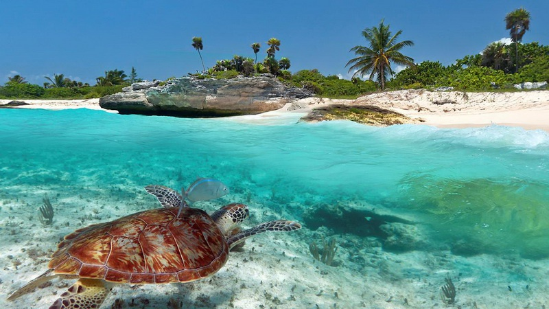

Невероятные приключения
Если вам нужен сразу и пляж, и наскальные гробницы, и термальные источники, и черепах повидать, и в целебной грязи вымазаться — тогда Дальян и Черепаший пляж полностью подойдут вам. Отправиться сюда из Мармариса можно как на яхте, так и на автобусе. В этот природный заповедник туристы прибывают ради черепах каретта-каретта, а еще ради сернистых источнико
Каретта-каретта — это своего рода завлекалочка для туристов по всему побережью Средиземного моря. Если вы будете не в Турции, а на Крите, вам все равно скажут: вот, смотрите, это то самое знаменитое место, куда приходит откладывать яйца каретта-каретта. При этом каждое место уникально и неповторимо. Весь фокус в том, что мест таких — много.
В Дальяне Черепаший пляж представляет собой песчаную косу Изтузу. Именно сюда приплывают сотни морских черепах, чтобы отложить яйца. Одна особь откладывает до 150 яиц, из которых выживают единицы. На малюток охотятся голубые крабы и другие хищники на побережье. А вот на взрослую черепаху дураков нападать нет: это огромная масса до 50 кг.
Греция
Когда в детстве читаешь легенды и мифы Древней Греции, Олимп представляется заоблачной вершиной, на которой стоит дворец Зевса и вечное лето. Про снег там нет ни слова! А он там есть, но зимой. Мы же собираемся в гости к греческим богам ближе к лету, когда снег растаял и не очень жарко. Для того, чтобы попасть на гору богов, нам предстоит пройти три ступени. Как в любой сказке, три испытания, но все выполнимые, подвигов совершать не нужно! Первая ступень, добраться до Греции, вполне современной, не древней. Вторая ступень, доехать до Литохоро, потрясающе милой деревни у подножия Олимпа, в которой жители в среднем доживают до 96 лет, чувствуется дыхание богов. Третья ступень, вознестись на гору Олимп, пешком, без специальной подготовки и снаряжения, теперь это возможно, благодаря хорошо оборудованной и размеченной тропе, удобному приюту и сопровождению гида. В финале нас ждет самая высокая гора Греции, и, кто знает, чем наградят олимпийские боги восходителей, они бывают удивительно щедры.
Перу
Внутренние перелеты по Перу включены в цену. Приглашаем Вас в это захватывающее путешествие по Перу. Вам предстоит знакомство с известными достопримечательностями и историческими памятниками. Построенный Пачакутеком в качестве императорской резиденции, а также с целью увековечить своё имя в истории, Мачу-Пикчу был третьим среди подобных резиденций-святилищ. Именно здесь которые поклонялись богу Солнца -Инти. Более чем на 400 лет этот город был забыт, а сейчас прикоснуться к его реликвиям может любой наш современник.
Африка
Южная Африка - страна сказочной природы и самобытной культуры. Здесь можно не только прекрасно отдохнуть, окунувшись в тёплые океанические волны на роскошных пляжах Мозамбика, но и вдоволь налюбоваться величественными горными хребтами, бескрайними пустынями и тропическими саваннами, а также понаблюдать за дикими животными во время увлекательного сафари-тура.